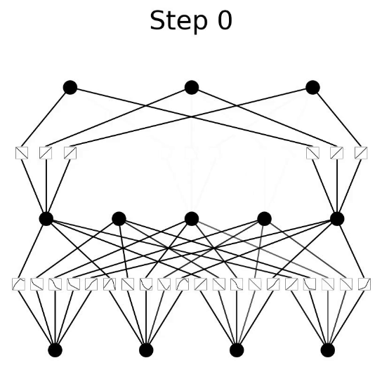

KAN (Kolmogorov-Arnold Networks) is a novel neural network architecture inspired by the Kolmogorov-Arnold representation theorem. Unlike traditional MLPs that place fixed activation functions on nodes, KANs place learnable activation functions on edges.

A KAN network where learnable univariate functions are placed on each edge, replacing traditional fixed activation functions at nodes.
Less Loss Means more accurate model.
{{ a.desc }}